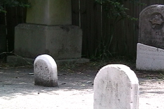
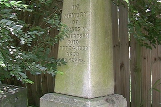
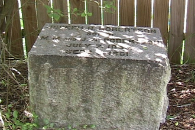

Moses Robertson Family gravesite (across the street from the Farmhouse)


Two anonymous confederate soldiers are buried here.
Tombstone of Moses M Robertson, father of Benjamin Moses and Judith Anne.
.

Tombstone of Joseph Robertson, the "handsome lover of horses" and older brother of Judith Ann and Benjamin Moses, who died from typhoid during the Civil War.